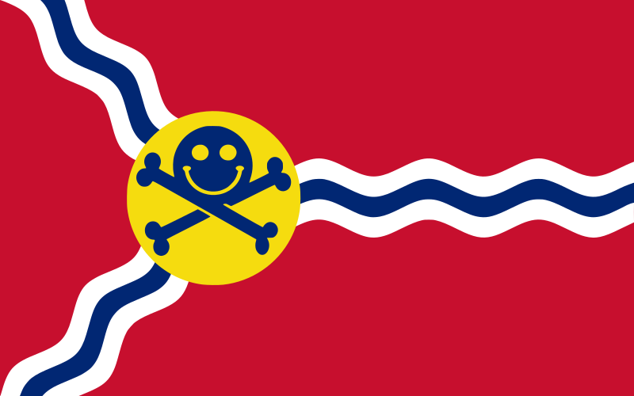

Recommended Minimum Requirements
DC314 will feature hands-on workshops and challenges intended to teach new skills and foster collaboration. For the best experience, we recommend bringing a laptop to take part and follow along.
The below criteria are suggestions only:
- 16GB+ RAM
- 80GB Free Space on an SSD
- Intel i5/AMD Ryzen 5 or better
- WiFi 5 (AC)